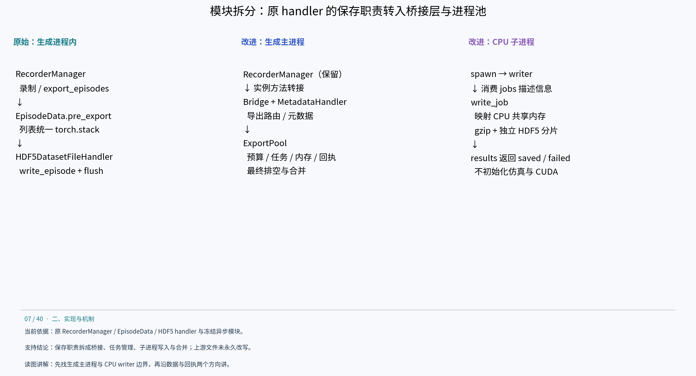
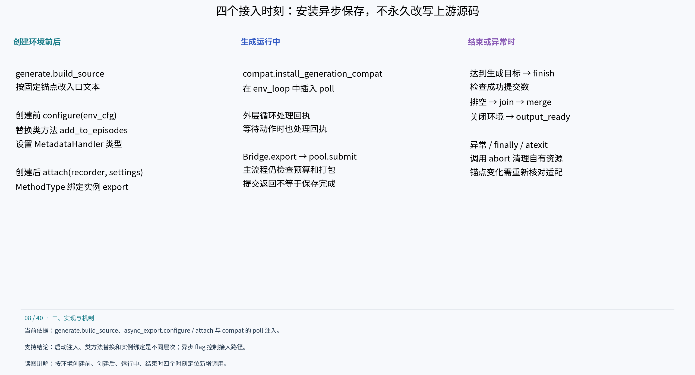
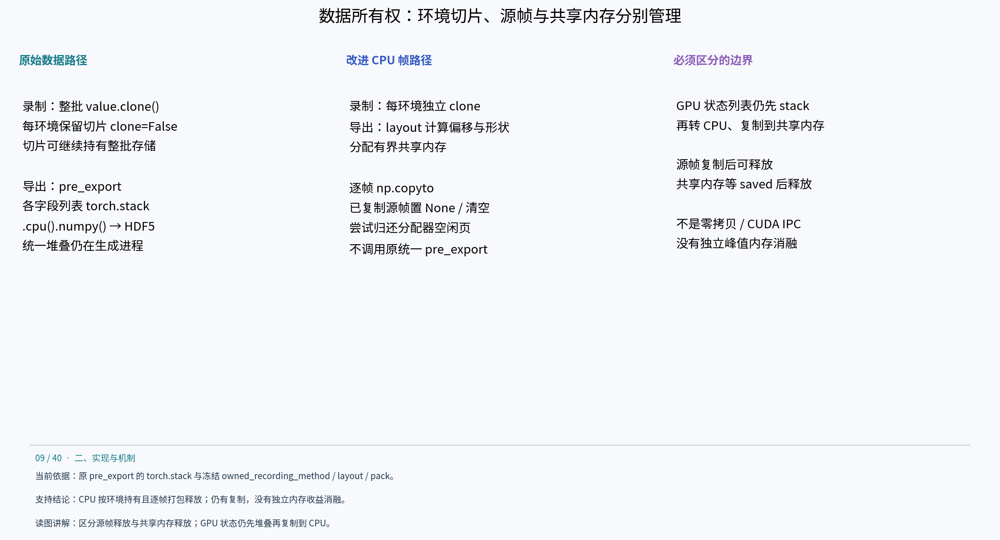
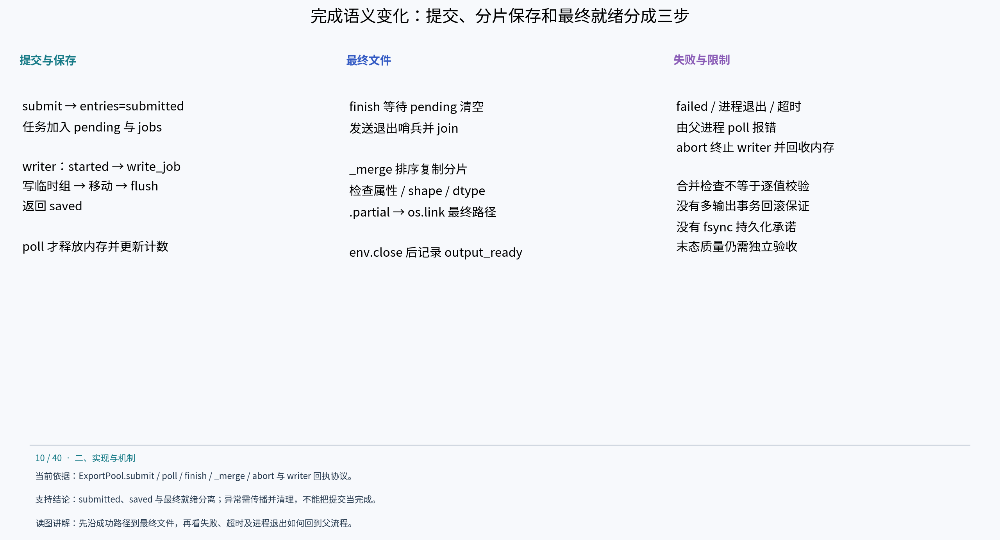

展开章节目录
- 原始同步基线到异步改进版：代码结构详解
原始版与改进版代码结构说明
原始同步基线到异步改进版：代码结构详解
本章只比较 cuRobo v1 下的同步保存基线与异步保存实现。它们共用规划后端、生成任务及 8 环境配置。这里的“新增／替换”指异步分支相对同步分支的运行时结构变化，不是由两个完整 Git 提交计算出的历史 diff。原始 recorder 依据当前本地 IsaacLab 源码，改进实现依据实验目录冻结的 v1 launcher；逐字历史同源性没有额外证明。摘录、路径、行号及哈希见 code-structure-evidence.md。
1. 模块职责怎样拆分

模块职责和进程边界原始保存链由 RecorderManager 协调，EpisodeData 管理每环境缓冲，HDF5DatasetFileHandler 在生成进程中写文件。改进后，recorder 继续管理录制与 episode，但“导出路由与元数据”“内存移交与任务状态”“实际压缩写入”“最终合并”由不同组件承担。
规划、环境任务调度和主循环组织仍由原 AutoData 代码负责。没有将每个环境改造成一个操作系统进程；新增进程集中在 CPU 保存侧。
2. 启动时在哪里接入：源码注入、类方法替换、实例绑定

异步分支安装顺序generate.py 读取原 scripts/generate_dataset.py 文本，build_source 按固定字符串锚点插入代码，然后编译执行生成的入口。每个锚点都要求出现一次；上游代码变化会触发断言，而不是自动理解新结构。这是运行时集成 overlay，不是永久改写上游源码。
以下为控制顺序摘要，省略日志和部分参数，不是可直接应用的补丁：
# 控制顺序摘要；settings 与 export_workers 来自 launcher 配置。
install() # 公共路径：安装任务兼容和遥测
if export_workers:
configure(env_cfg) # 环境创建前：替换录制方法与 handler 类型
env = gym.make(env_name, cfg=env_cfg).unwrapped
if export_workers:
attach(env.recorder_manager, settings) # 创建后：绑定实例导出方法
# workers=0 不进入两个条件分支，沿原 recorder 保存路径执行。
实际绑定语句是 attach(env.recorder_manager, settings)。configure 修改 RecorderManager.add_to_episodes 类方法，并将 env_cfg.recorders.dataset_file_handler_class_type 设为 MetadataHandler；attach 创建 Bridge，然后针对这个 recorder 实例绑定导出方法：
recorder.export_episodes = MethodType(
lambda instance, *a, **k: self.export(*a, **k), recorder
)
因此只有配置 flag 打开时才安装异步保存链；但录制方法的替换作用于当前进程中的 RecorderManager 类。owned_recording_method 用标记避免重复包装。MetadataHandler 的 close 是空操作，因为真正的 HDF5 由 writer 关闭；它不是对所有文件 handler API 的通用完整实现。
compat.py 在外层迭代和等待动作的循环中调用 poll，既处理保存成功回执，也尽早发现 writer 失败。生成达到目标后，launcher 先 finish(expected_successes=生成成功数)，再沿原结束路径关闭环境；output_ready 在 env.close 之后记录。异常路径和 atexit 则调用 abort。
3. 原始调用链与改进调用链逐步对照
原始同步路径如下（当前 recorder 源码摘要）：
# RecorderManager.export_episodes
self._episodes[env_id].pre_export() # 递归 torch.stack，各列表转成 tensor
handler.write_episode(episode, demo_id, dataset_compression)
# handler 内：value.cpu().numpy() → h5py.create_dataset(...)
# 默认开启压缩时 gzip level 2
self._episodes[env_id] = EpisodeData()
# 本次 export 的写入完成后 flush handler
改进后的 Bridge.export 保留空数据判断、导出模式、成功/失败输出路由、seed/success 属性及可选 demo_ids，但不调用原 pre_export 或原 write_episode：
# Bridge.export 摘要：提交原始 episode.data，允许逐帧打包后释放源数据。
self.pool.submit(
episode.data, output=handler.path,
env_args=dict(handler._env_args), attributes=attrs,
compression=recorder.cfg.dataset_compression,
demo_id=chosen_demo_id, env_id=env_id,
format_version=self.format_version, release_source=True,
)
episode.data.clear()
recorder._episodes[env_id] = self.episode_class()
chosen_demo_id 是讲解用变量，真实代码按 demo_ids 是否提供选择 ID。submit 返回的是 demo 索引，Bridge.export 没有将其返回为完成凭证。两者都为普通函数；异步来自后台进程，不来自 async def。submit 返回前仍可能等待预算并执行 CPU 打包。
原 recorder 在完成导出处理后更新 episode 计数；Bridge 将已保存计数更新放在 saved 回执处理后，并用 saved_seen 防止重复计数。MetadataHandler.demo_count 主要服务默认 ID 的索引进展，不是“最终文件已存在”的证明。任务生成成功数、已提交数、已保存数与末态合格数必须分别理解。
4. 内存路径为什么需要改：切片所有权与整条堆叠

数据所有权改动对照原 add_to_episodes 先 clone 一份包含所有环境的 tensor，再把 value[value_index] 以 clone=False 放入 EpisodeData。切片可以继续持有底层整批存储；即使部分环境结束，只要其他切片仍在使用，共用的存储就不能回收。改进逻辑如下，循环与字典处理省略：
# 原始：批量 clone 后保留每环境切片。
value = value.clone()
episode.add(key, value[value_index], clone=False)
# 改进：CPU 按环境独立持有；GPU 仍保留原批量 clone 路径。
cpu_owned = value.device.type == 'cpu'
if not cpu_owned:
value = value.clone()
episode.add(key, value[value_index], clone=cpu_owned)
第二个改动发生在导出时。原 pre_export 对所有叶子列表 torch.stack；改进 layout 先确定嵌套字段的 path、shape、dtype、offset 和 bytes，将偏移按 64 字节对齐，再分配共享内存。CPU 列表按帧复制到目标缓冲，release_source=True 时把已复制源帧替换为 None，累计释放约 64 MiB 时尝试 malloc_trim，末尾清空列表。它降低源帧与额外整条堆叠副本同时存在的需求，但仍存在复制开销，没有测得独立峰值内存收益的消融结果。
GPU 状态列表采用 torch.stack(value).detach().cpu().numpy() 后一次复制到共享内存，目的是减少逐帧设备到主机转换。不是所有字段都逐帧复制，也不是 CUDA IPC：writer 收到的是 CPU 共享内存。该路径没有消除设备到主机的数据传输或同步成本。
5. 新增任务协议与父子进程状态
submit 先检查单条 size ≤ limit，再在 used+size 超预算时 poll(wait=.05)；之后分配内存、pack、再 poll、登记 pending 与 entries、jobs.put、按需扩容。检查顺序很重要：打包期间完成的保存任务可以在第二次 poll 中被回收，已有 writer 也可能再次消费任务。
writer 通过 jobs.get 取任务；write_job 按 worker PID 与 route 打开独立 HDF5 文件。数据先写入 _pending_<id> 组，成功后移动到 /data/demo_<id>，更新 total 并 flush，然后发送 saved。这里的组移动与 flush 是分片内部完成步骤，不是“最终输出已经合并”。gzip level 2 与原路径保持一致，h5py 仍自动选择 chunk；未在这组改造中启用离线实验中的 lzf。
6. 正常完成、失败退出和最终文件的语义

任务完成与失败分支_merge 的检查不是逐值比较，也不是物理质量验收；保存后还需独立 validate_output。os.link 拒绝覆盖已有文件，单次文件名发布具有对应的原子语义，但没有跨多个输出 route 的事务回滚保证，也不能等同于 fsync 持久化保证。清理时保留的分片与 manifest 不是已实现的自动恢复机制。
poll 的单任务超时使用 writing_started（已收到 started 时）或 submitted_at（尚未开始写入时）作为参考；因此应分别理解排队期间与写入期间的等待。主循环通过 poll 发现异常，finish 自身失败时会 abort，launcher finally / atexit 作为退出清理路径。不能把“后台执行”理解为后台失败不会影响主任务。
7. 改动与实验指标怎样对应
讲解顺序建议：先讲模块拆分，再讲安装点和方法替换，然后沿一条 episode 跟踪内存、任务、文件和回执，最后用计时结果解释收益与代价。结论仍是本轮异步整体实现改善效率，而非已证明某个单函数贡献了全部加速。